Axivity AX6
- General Device Introduction
- Data transfer protocol for professionals
- As a professional: do I need to do anything on a daily basis or all N days (for each patient using a specific device / app)?
- As a professional: do I need to do anything after each individual period of device / app use ended (for each patient using a specific device / app)?
- As a professional: do I need to do anything after the full periods of use of a specific device / app ends (for each patient using a specific device / app)?
- Original device setup and pairing
- Device pre-setup and configuration
- Troubleshooting/FAQ
- Returned device processing and cleaning / an application use period for a participant has ended
- Device recycling and provisioning
General Device Introduction
The Axivity (AX6) is a wrist worn sensor for monitoring and recording movement including body position, acceleration, and direction . This data can be used to identify activities, such as sitting, walking, falling, etc. Axivity records data every second and stores it inside the small black sensor “puck” (Figure 1).
How does this device look?
Axivity comes in two parts: a silicone strap and a small sensor “puck” as illustrated in Figure 1, which is inserted inside the wristband and worn on the wrist (Figure 2).
| 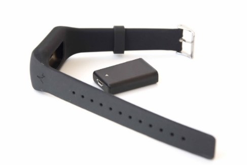 |
| Figure 1: Axivity wristband and sensor “puck” |
 |
| Figure 2: Placement on a wrist |
What does it record?
The Axivity automatically records anonymised movement data on the sensor “puck”. This data includes: your position of wrist , the acceleration and the direction that you move.
How is it used?
Axivity is worn on the non-dominant wrist - i.e. the side you use less - using the provided silicone strap during day and night. It can be worn for up to 9 days without having to be recharged and is suitable for day-to-day activities, including showering and bathing, but must not be worn for activities such as diving, swimming, and sauna/steam rooms.
Data transfer protocol for professionals
As a professional: do I need to do anything on a daily basis or all N days (for each patient using a specific device / app)?
No. Anonymised movement data is stored on the Axivity device until it is retuned, at which point data will be removed. You do not need to do anything daily but will need to assure that a meeting is arranged with the patients at the end of their overall study participation so that you can retrieve the device. The data will then need to be transferred using the ** and stored as a local backup using the ** .
As a professional: do I need to do anything after each individual period of device / app use ended (for each patient using a specific device / app)?
No. The AX6 will be set up to complete the full two weeks of continuous monitoring (see ) for each patient (it will keep monitoring during any break days). You will only need to take action after all device-use periods of an individual patient for the AX6 are completed (see ** ).
As a professional: do I need to do anything after the full periods of use of a specific device / app ends (for each patient using a specific device / app)?
Yes. After the wear period for the AX6 has ended, or at the latest at the end of the overall study participation period for each patient you must arrange a visit with (or by) the patient. When the patient brings the device, you must manually transfer data from it, recharge it.
Transferring Data from the AX6:
- OMGUI is the windows software for activating the device, transferring data and viewing battery status. Find and click the desktop or start menu link to start OMGUI now.
- If you can’t find the link, try to open an “Explorer” window and navigate to “ C:\Program Files (x86)\Open Movement\OM GUI ” and double-click on “OmGui.exe” to start OMGUI as illustrated below. If the path or file is not available, or if the program does not start, please see: .
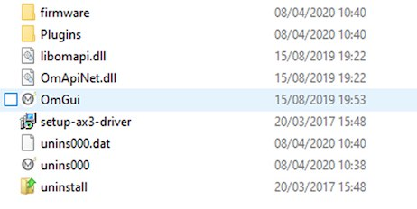
- Connect the micro-USB cable to the Axivity device and USB port. OMGUI will now detect the device. This may take up to a minute. If the device shows up in the list of devices of OMGUI, you can proceed with step 3.
- If the connection is successful, the device should show up in the list of devices:
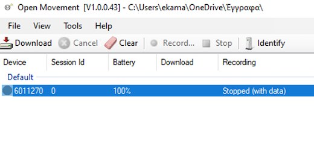
-
- If the device does not show up in the list of devices after about 1 minute, please try to connect the Axivity device to another USB port on the computer.
- If you are using a USB-hub (a device that allows you to connect multiple USB devices to one USB-port on the computer at the same time), try to connect directly to the computer without using the USB-hub.
- Please note that a light should appear on the AX6 device when plugged in to the USB port. If this does not appear, it may take up to 5 minutes for the battery to reach an appropriate charge to function. If you have persistent problems with connection the device, please feel free to reach out to .
- Click “ Download ” and the data will be transferred from the device to a default location on your laptop – your ‘working folder’ as setup in . You can change your working folder by selecting File -> Choose Working Folder. After N days use, we expect a n-MB file, so data transfer from the device to your computer may take some time.
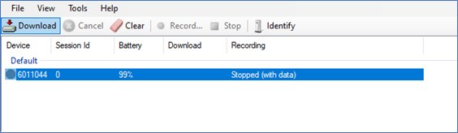
-
- Note: data transferred from the AX6 is copied and therefore still exists on the device. This should be manually removed following step 6 below once you confirm data has been uploaded to the idea fast portal and backed up locally.
- Once the data is on your laptop, you must manually upload this to the IDEA-FAST project at: https://data.ideafast.eu
- Navigate to the portal and enter the required meta-data. When clicking the file upload / selection button in the portal, you can find the latest AX6 files in the folder indicated in the “ Workspace: … “ window in OMGUI:
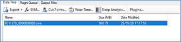
-
- Use the file selector pop-up presented by your browser to select the file (or use drag-and-drop to start the upload to the datahub; please not that not all web-browsers will support this option).
- Please note that the *.cwa files recorded from the AX6 devices can be very large and the data upload may take a long time to complete.
- Please also use the to store a backup copy of the AX6 data file (*.cwa) on the IDEA-FAST backup hard-disk drive.
- Once you are certain that BOTH the file upload AND the local data backup have been successfully completed, please make sure to manually delete the data recording from the OMGUI workspace folder and clean the device with a damp cloth. I f the backup process completed successfully, the file may already have been deleted automatically.
- To delete the data manually from OMGUI workspace, go to the path indicated as your workspace location (see picture below).
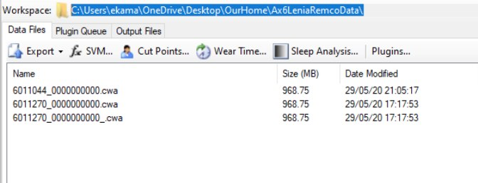
At your workspace directory, you can manually delete the .cwa files (see below). They will also stop appearing in the OMGUI interface.
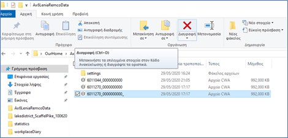
-
- To delete the data from the AX6, select the device at the OMGUI window (which will turn it below as below) and click on the “ Clear ” button.
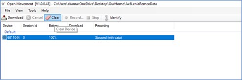
- If the feasibility study has not yet concluded at your study centre, please continue with ** in order to prepare the device for use by the next patient.
- If the feasibility study has concluded at your study centre, or the device at hand will no longer be needed for further patients, please follow step .
Original device setup and pairing
If handling a device and it arrives new: what needs doing before it gets sent to a study centre?
Put into inventory management?
Record the unique device ID that is printed ** in the inventory management tool at https://inventory.ideafast.eu . Also use the to generate a project-specific device ID for each AX6 device. Record both IDs in the appropriate fields in and record the current location of the device.
Use the to produce a label and a backup label for the device and attach one label to the device immediately. Enclose the backup label with the device when preparing for dispatching it.
- TODO: Adjust based on where devices are initially sent.
- TODO: Adjust based on final procedure for device labelling.
- TODO: Add procedure for adding device to inventory management system (include link etc.).
Needs firmware update?
No.
Pairing with a companion application?
Movement data is stored on Axivity and requires manual transfer on a Windows machine using the OMGUI application. No pairing with a companion app running on the smartphones provided to the users or on their private devices is required.
Any account setup required?
Not Applicable.
Needs pairing with hub device?
Not Applicable.
Any assembly required?
No. However, AX6 devices comes in two parts: (i) wristband and (ii) sensing device (also called “puck”).
Package together with which other devices for which study centre?
Not applicable. The AX6 devices and wristbands will be delivered directly to the study centres .
If handling an application: what needs doing before a study centre can use the app?
Do we need to get accounts from the application provider?
Not Applicable.
Can the software be downloaded, or do we need to make it available?
Yes. The OMGUI software can be downloaded and installed, but only works on Windows system. Version 43 of OMGUI will be used and can be downloaded here .
The software needs to be installed on the study computers at all four study sites. Please assure that the process for setup ** has been followed.
Does it need to be installed on the hub devices (smartphones provided to the patients)?
No. The software will run on PCs at the study centres. No software or apps will need to be installed on the smartphones provided to the patients.
Do we need to activate study accounts?
Not Applicable.
Device pre-setup and configuration
What sort of a device / application is this, what is it for and how does it work?
The AX6 devices are miniature logging sensors that can be fitted on a wrist band.

The AX sensor is suitable for day to day activities, including showering and bathing, but must not be worn for activities such as diving, swimming, and sauna/steam rooms.
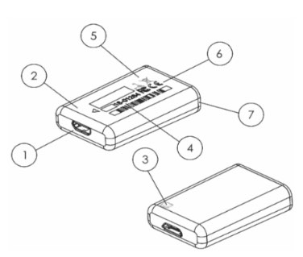
| Item | Description | Notes |
| 1 | USB connector | Used for configuration, download and charging. |
| 2 | Enclosure Puck | Made from food-safe, hypoallergenic polycarbonate. |
| 3 | LED | Can be configured to be used for displaying device status. |
| 4 | ID Serial Number | Product type followed by a unique serial number. |
| 5 | Axis Diagram | Accelerometer sensor orientation. |
| 6 | Certifications | CE mark, FCC & WEEE symbol. |
| 7 | Enclosure Ltd | Made from food-safe, hypoallergenic polycarbonate. |
Table 1: Overview of AX6 components.
Configuration and Analysis
Configuration and analysis for AX6 is done through the Open Movement Graphical User Interface (OMGUI). OMGUI is an open source lightweight application that can be run on a computer with Windows PC with XP SP3 or later operating system and Microsoft .NET Framework v3.5 or later.
For installation instructions for OMGUI, please see . Further information on the required drivers and software can also be found at: https://axivity.com/downloads/ax3 .
OMGUI is designed for researchers to provide them with:
- an easy to use interface to convert binary AX recordings
- access to validated analysis algorithms on recorded AX data.
In the IDEA-FAST feasibility study, OMGUI will be used to (i) configure the settings for each AX6 device before it is given to a patient; and (ii) retrieve the data recorded from the device use by the patients during their study participation. Please see ** for details on the required steps for data transfer.
What has already been done in pre-setup for the device or application?
Not Applicable.
What will need to be done before a patient can start using this?
Any account setup required?
The AX6 sensor needs to be configured and charged by the researcher using the OMGUI desktop software with a start date and an end date.
Needs pairing with hub-device?
No pairing is required, except for direct contact using a USB cable and OMGUI.
Any configuration / assembly required?
To start using the sensor, connect it to the computer using a USB port and launch the OMGUI software. For the IDEA-FAST feasibility study, please follow this protocol in order to prepare a device to be used by a patient:
Make sure the AX6 device that is to be supplied to the patient is connected to a USB port to charge on the day before it is handed to a patient and leave it plugged in for charging during the night.
-
OMGUI is the windows software for activating the AX6, transferring data, and viewing battery status. Find and click the desktop or startmenu link to start OMGUI.
- If you can’t find the link, open an “Explorer” window and type “C :\Program Files (x86)\Open Movement\OM GUI ” into the search bar at the top of the window. Double-click on “OmGui.exe” to start OMGUI.

-
- If the path or file is not available, or if the program does not start, please see: .
- If not yet connected, connect the micro-USB cable to the Axivity device and USB port. OMGUI will now detect the device. This may take up to a minute. If the device shows up in the list of devices of OMGUI, you can proceed with step 3.
- If the connection is successful, the device should show up in the list of devices:
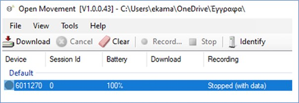
-
- If the device does not show up in the list of devices after about 1 minute, please try to connect the Axivity device to another USB port on the computer.
- If you are using a USB-hub (a device that allows you to connect multiple USB devices to one USB-port on the computer at the same time), try to connect directly to the computer without using the USB-hub.
- Please note that a light should appear on the AX6 device when plugged in to the USB port. If this does not appear, it may take up to 5 minutes for the battery to reach an appropriate charge to function. If you have persistent problems with connection the device, please feel free to reach out to .
- Complete configuration to begin 2 weeks (14 days) of recording on target start and end day for patient to use AX6. The device must be configured so that 2 weeks recording fit on the device (~50 Hz). Depending on when the starting day of the recording is set, the patient might be asked to recharge device before wear period starts. In order to configure the device for a new recording, select the device in the OMGUI and click on record.
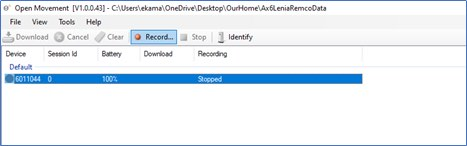
At the configuration window that appears, set the following parameters:
-
- Freq. (Hz): 50
- Recording Interval: Duration 14 days – start and end date will vary depending on each patient.
- Further details such as Study Centre and Subject Details to be filled accordingly.
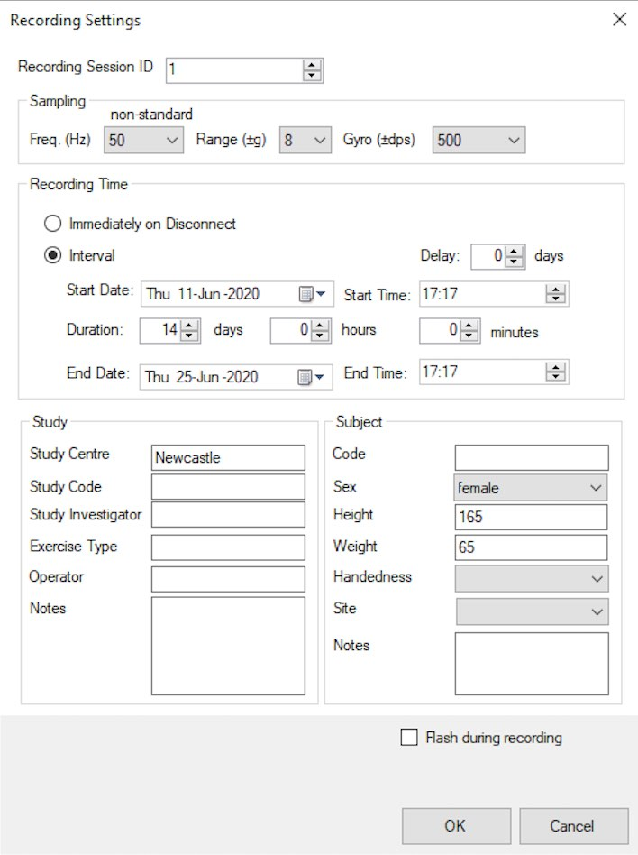
Once setup is complete, allow the patient to use the sensor fitted on a wrist band for the intended duration. The recorded data will be transferred from the device to the study datahub and to the local backup hard-disk drive once the participant has completed their study participation period.
Please make sure that the devices are fully charged before handing them to patients:
| The Axivity sensor can be charged through its micro USB connector using a cable connected to a standard power supply. For example, a 5V AC adapter to a wall socket, or a USB port on a computer or externally powered USB hub. A LED light will be amber when the AX6 is charging. Full charge will be indicated by a solid green (not connected to a computer) or pulsing white (connected to a computer) – this may take up to two hours. | 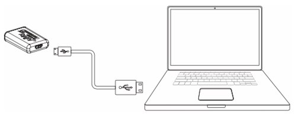 |
Troubleshooting/FAQ
The device / app seems to have stopped working: what should I do?
Battery?
You may not be informed instantly that your device is out of the battery. Usually the battery should be charged and ready to use for your entire study duration. If you are about to begin using the AX6 device and it has been given to you more that 2 days ago, please follow these steps to make sure it is fully charged before you begin the recording.
Connectivity issues?
Not Applicable.
Need to restart or log in again?
Not applicable.
Using the device / app is uncomfortable to me: what can I do?
Adjust wear style?
You may need to change a size of the strap. If you feel the device is dirty you can clean it with wet wipes. After showering or exposing the device to water, please wipe it down with a dry cloth. This ensures that the label printed onto the device does not peel off.
Adjust usage pattern?
You may not be applicable to wear them 24/7 or encounter a skin sensitive situation. Please consult your clinician for further advice.
How can I get help with using this?
If you have any other questions or concerns, please contact your local study centre:
Newcastle, United Kingdom
Location
Person Name
Centre Name
Rotterdam, Netherlands
Location
Person Name
Centre Name
Kiel, Germany
Location
Person Name
Centre Name
Muenster, Germany
Location
Person Name
Centre Name
Returned device processing and cleaning / an application use period for a participant has ended
Do I need to clean the device after each participant returns the device?
Yes. The device should be removed from the strap and both parts should be cleaned with alcohol-based wipes.
What type of material can clean the device?
- Compatible with isopropyl alcohol (IPA) wipes
- Compatible with anti-microbial solution.
Trigger Data Transfer Protocols?
« paste the instructions for manual retrieval of data from above »
Where should the device be returned?
Prior to returning any device, please ensure all data has been transferred and successfully uploaded to the idea-fast hub (link to above).
Device recycling and provisioning
How will the devices and applications be supplied to the study site?
These devices will be mailed directly to the study site.
What to do with devices once the study site is entirely done with them?
???